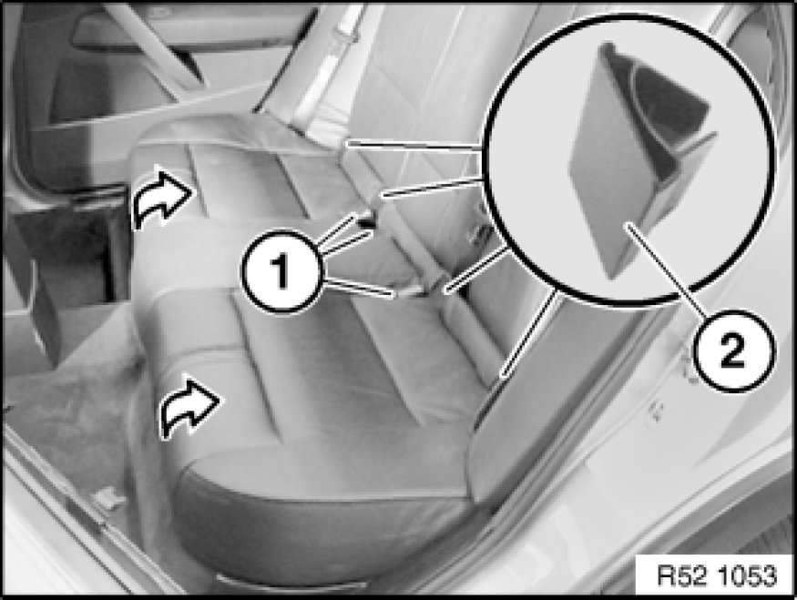

Rear Seat, Through-Loading
52 26 005 - Removing and installing/replacing rear seat (through-loading system)

Unclip rear seat on left/right towards top.
For op. ext. seat heating only:
Unfasten plug connection.
Lift out rear seat.
Installation:
Feed belt buckles (1) through designated openings into correct location.
Make sure ISOFIX covers (2) are correctly engaged.